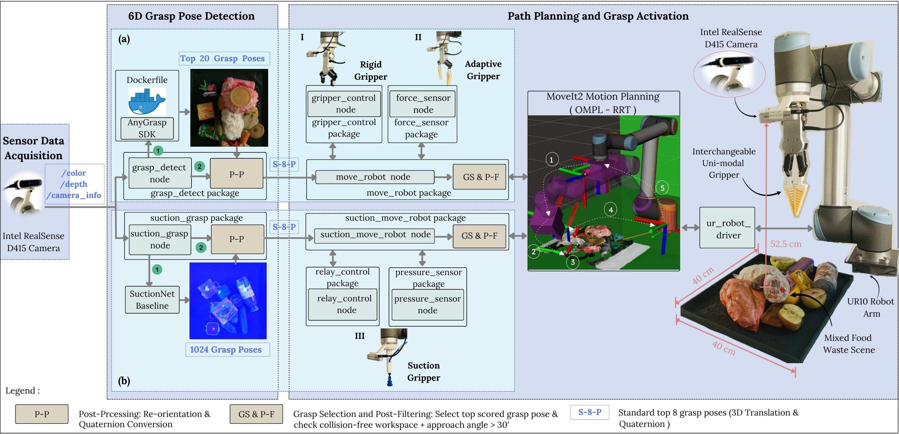
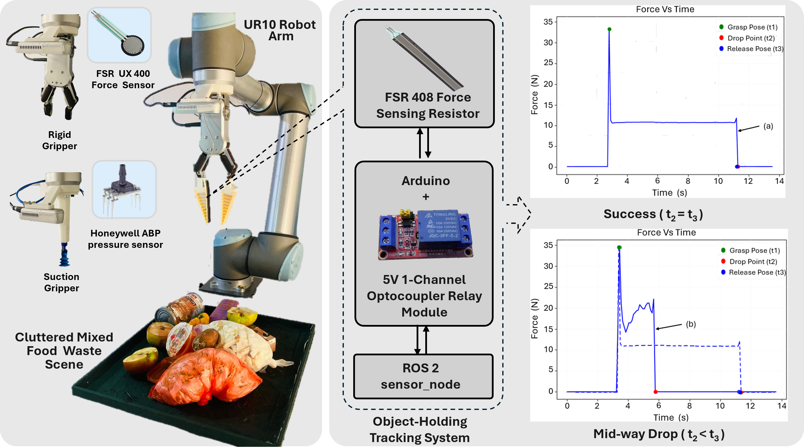
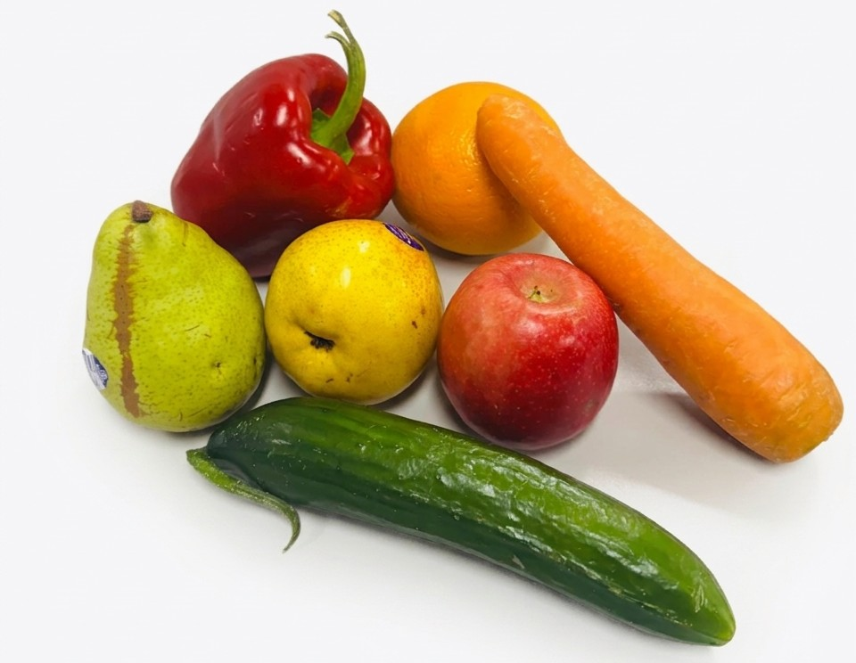

Grasping-in-Clutter Experimental Procedure
This experimental procedure provides a reproducible methodology for evaluating robotic grasping performance across four progressively challenging conditions, ranging from isolated inorganic objects to heavily cluttered mixed food waste scenes. Each level specifies the required object arrangement, scene preparation and grasping procedure so that evaluations can be conducted consistently across the three grasping modalities.
Experimental Methodology Overview
Four experimental levels need to be conducted in sequence to progressively increase the complexity of robotic grasping in cluttered environments. The Real-World Robotic Grasping Pipeline provides the common experimental platform and grasp-generation approach for all four levels.
Single Isolated Object
Individual object grasping under minimal environmental interference.
LEVEL 02Medium-Clutter Scene
Randomized clutter generated from predefined inorganic object clusters.
LEVEL 03Heavy-Clutter Scene
Increased object density through pairwise combinations of inorganic clusters.
LEVEL 04Mixed Food Waste Scene
Heterogeneous clutter incorporating organic materials and moisture-related environmental disturbances.
Real-World Robotic Grasping Pipeline

The experimental platform consists of a UR10 robotic manipulator and an Intel RealSense D415 RGB-D camera operating over a 40 × 40 cm² workspace. To reproduce the GRAB configuration, the camera needs to be positioned approximately 52.5 cm above the workspace, with its viewing direction perpendicular to the experimental surface.
Experimental Object Dataset
The experimental dataset uses 21 inorganic objects from seven contaminant categories, with three representative objects selected from each category.

The evaluation needs to progress through four experimental conditions. Level 1 establishes isolated-object grasping performance; Levels 2 and 3 introduce randomised inorganic clutter at increasing object densities; and Level 4 incorporates organic materials and moisture-related disturbances into mixed food waste scenes.
Single Isolated Object — Level 1
For Level 1, each object needs to be placed individually at five predefined workspace positions: the four corners and the centre. Each of the 21 objects needs to be tested at all five positions using each of the three grasping modalities (For Rigid parallel-jaw gripper and Fin-Ray soft adaptive gripper refer to Parallel Grasping Pipeline, and for Suction gripper refer to Suction Grasping Pipeline), resulting in 105 grasp attempts.
Graspability Parameters
Object Deformability Score (QO) : From respective independently calculated DCD values for each object (DCD calculation).
Pose Score (QP) : From respective vision models.(Anygrasp or SuctionNet)
Clutter Score (QC) : Respective occupancy measurements are included in demo.py and inference.py codes.
Performance Parameters
Grasp Success Score (SP) : Success or Failure.
Grasp Stability Score (SB) : From Force vs Time plots from force sensor measurements in the parallel grasp pipeline, and Pressure vs Time plots from pressure sensor measurements in the suction grasp pipeline.
Grasp Efficiency Score (SF) : Grasp cycle time is calculated in move_robot.py under respective pipelines.(Anygrasp or SuctionNet)

In the original GRAB experiments,suction grasping was unsuccessful for plastic bags and mesh bags because a reliable suction seal could not be established or maintained. Accordingly, these two categories should be excluded from the suction-based experiments in Levels 2–4 when reproducing the GRAB protocol.
Medium-Clutter Scene — Level 2
Level 2 requires multiple inorganic objects to be introduced into the workspace simultaneously to evaluate grasping under medium-clutter conditions. Three predefined object clusters and repeated randomised scene arrangements should be used to ensure consistent object composition while varying spatial configurations.
Object Cluster Formation
The 21-object dataset is divided into three clusters of seven objects, with each cluster containing one representative object from each of the seven inorganic contaminant categories as illustrated in Figure 2. For suction-based experiments, plastic bags and mesh bags should be excluded based on the Level 1 observations, leaving five objects per cluster.
Randomized Scene Generation
For each repetition, the objects belonging to a cluster need to be randomly dropped from a storage box into the experimental workspace. This randomised placement should generate variations in object position, orientation, contact and partial occlusion without changing the predefined cluster composition.
Grasp Execution
For each grasping cycle, candidate grasp poses need to be generated using AnyGrasp for the rigid and Fin-Ray grippers or SuctionNet for the suction gripper. Following post-processing, the highest-ranked feasible grasp should be selected from the top eight candidate poses. Seven consecutive grasp attempts need to be conducted for each seven-object cluster with the rigid and Fin-Ray grippers; five attempts per cluster should be conducted for the suction gripper after excluding plastic bags and mesh bags. Each of the three cluster configurations needs to be repeated five times, yielding 105 attempts for each parallel-jaw modality and 75 for suction. Same Graspability and Performance Parameters should be recorded at each grasp attempt similar to Level 1 experiments.
Heavy-Clutter Scene — Level 3

Level 3 requires the inorganic object density to be increased to assess grasping under heavy clutter. Each scene should contain 14 inorganic objects for the rigid and Fin-Ray grippers, reflecting the maximum practical object density used in GRAB under the specified workspace and camera depth constraints.
Heavy-Clutter Configuration
The three clusters established in Level 2 need to be combined in pairs to form three heavy-clutter configurations: Cluster 1 + Cluster 2, Cluster 1 + Cluster 3 and Cluster 2 + Cluster 3. Each combination should contain two representatives of every inorganic contaminant category, producing 14 objects per scene. For suction-based trials, plastic bags and mesh bags need to be excluded, resulting in 10 objects per scene.
Randomized Scene Generation
For each repetition, the objects from the selected cluster pair need to be randomly dropped into the workspace to produce a new heavy-clutter arrangement. The resulting scenes should vary in object orientation, occlusion and contact interactions while retaining the same cluster-pair composition.
The grasp-generation, post-processing and selection procedure specified for Level 2 should also be applied in Level 3. For each cluster-pair configuration, 14 consecutive grasp attempts need to be performed with each parallel-jaw gripper, or 10 attempts with the suction gripper. Each of the three configurations should be evaluated over five repetitions, yielding 210 attempts per parallel-jaw gripper and 150 suction attempts. Same Graspability and Performance Parameters should be recorded at each grasp attempt similar to Level 1 experiments.
Mixed Food Waste Scene — Level 4
Level 4 requires inorganic contaminants to be combined with organic food waste to evaluate grasping in a heterogeneous, moisture-affected environment. Each mixed scene should contain seven inorganic contaminants and seven organic food waste items, forming a 14-object configuration for the rigid and Fin-Ray grippers. This condition is intended to introduce occlusion, surface moisture, adhesion, irregular geometries and contact interactions between organic and inorganic materials.
Organic Material Selection
Seven representative organic food waste materials should be selected: Packham pear, carrot, apple, orange, cucumber, capsicum and green Nashi pear. Using these materials allows the mixed scenes to incorporate differences in geometry, surface texture, firmness and moisture-related characteristics.

Organic Sample Preparation
For each selected fruit or vegetable, the item needs to be cut into two halves, with one half retained as the experimental sample. The seven prepared samples should be immersed in water, removed and drained before being stored together in a plastic bag under ambient conditions for ten days, following the GRAB preparation procedure. Moisture released during storage contributes to a liquid-rich organic residue that can form the watery base of the mixed-waste scene. The volume and viscosity of the accumulated liquid were not measured in the original experiments and should not be treated as controlled quantitative parameters.
Mixed-Scene Generation
The three inorganic clusters defined in Level 2 need to be reused to construct the mixed-waste scenes. Each seven-object inorganic cluster should be combined separately with the seven prepared organic samples, yielding three mixed configurations containing 14 objects each for the rigid and Fin-Ray grippers. For suction experiments, plastic bags and mesh bags should be excluded, leaving five inorganic contaminants alongside the seven organic items.
Configuration 1
Inorganic Cluster 1 combined with seven organic food waste items.
Configuration 2
Inorganic Cluster 2 combined with seven organic food waste items.
Configuration 3
Inorganic Cluster 3 combined with seven organic food waste items.
For each configuration, the inorganic and organic objects need to be randomly introduced into the experimental workspace to create heterogeneous clutter. The randomisation should vary positions, orientations, occlusions and contact conditions while maintaining the specified material composition. The prepared organic residue should be retained as part of the moisture-affected scene.
The grasp-generation and selection procedure established in Level 2 should be retained for Level 4: AnyGrasp or SuctionNet needs to be used according to the grasping modality, and the highest-ranked feasible grasp should be selected from the top eight post-processed candidates. Each mixed configuration should be evaluated over five repetitions. To reproduce the reported trial counts, 14 consecutive grasp attempts need to be conducted per repetition for each parallel-jaw gripper and 10 attempts per repetition for suction, giving 210 trials per parallel-jaw gripper and 150 suction trials. As in Levels 2 and 3, plastic bags and mesh bags should be excluded from suction-gripper evaluation because of the seal limitations observed in Level 1. Same Graspability and Performance Parameters should be recorded at each grasp attempt similar to Level 1 experiments.
| Experimental Level | Rigid | Fin-Ray | Suction | Total |
|---|---|---|---|---|
| Level 1 | 105 | 105 | 105 | 315 |
| Level 2 | 105 | 105 | 75 | 285 |
| Level 3 | 210 | 210 | 150 | 570 |
| Level 4 | 210 | 210 | 150 | 570 |
| Total | 630 | 630 | 480 | 1,740 |